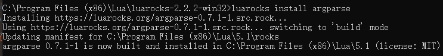
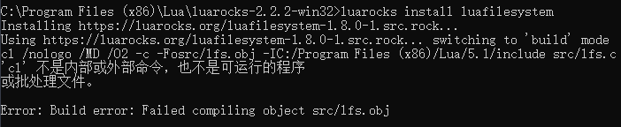

说明: 本文描述了windows系统上从Lua环境安装配置到使用luarocks安装luacheck的详细步骤。笔者参考网上的博客进行配置时踩了不少坑，最终整理出一套尽可能简洁且可行的步骤，希望帮到各位伙伴
另，笔者后来发现Luacheck在windows上的安装有更简洁的方法，一步即可，甚至不需要配置lua环境，详见文末。
环境说明
- Windows 10 专业版
- Visual Studio 2017 community
- Lua for Windows v5.1.5-52 Released
- Luarocks 2.2.2
步骤
1. 安装配置Lua环境
(1) Lua for Windows下载地址：https://github.com/rjpcomputing/luaforwindows/releases
(2) 直接下载LuaForWindows_v5.1.5-52.exe,双击安装(路径等设置按照默认即可)

(3) 安装好后，环境变量会自动配置好，命令行输入lua，显示结果如下，则配置成功
2. 安装并升级luarocks
(1) 在下载Lua for windows的网页中往下拉，可以看到LuaRocks updater，分别下载红框中的两个文件，得到luarocks-2.2.2-win32.zip和lfw_luarocks-2.2.2-win32.7z
(2) 分别解压两个压缩文件，并将lfw_luarocks-2.2.2-win32中的文件全部拷贝到luarocks-2.2.2-win32中，如下图
(3) 将文件夹luarocks-2.2.2-win32移动到lua目录下。(若按照本文步骤1安装lua，则目录为C:\Program Files (x86)\Lua)
(4) 使用管理员身份运行windows命令提示符（方法：在Windows10系统的搜索框中直接输入命令CMD，在命令提示符上单击右键，选择管理员身份运行）
(5) 进入luarocks目录1
cd C:\Program Files (x86)\Lua\luarocks-2.2.2-win32
(6) 执行install.bat， 显示以下内容表明安装成功
(7) 执行lfw_install.bat。（若非管理员身份运行cmd，本步骤会出错）
此时，输入luarocks，可看到版本信息为2.2.2，
3. 使用luarocks安装luacheck
Note: luacheck的安装涉及到一些依赖，需要先安装一些其他的模块，包括：argparse, lanes, luafilesystem。（luacheck对所依赖的模块的版本也有一些要求）。
(1) 继续在命令提示符中输入luarocks install argparse示如下信息，表明安装成功。

(2) 紧接着 luarocks install luafilesystem（在此之前，其实已经有安装好的luafilesystem模块，因其版本过低，需要重新安装）。
此处在编译时报错，信息如下：

这是因为缺乏VC++编译的环境。根据luarocks的readme文档中的说明：
if you want to install rocks, make it a “Visual Studio Command Prompt”
我们需要在Visual Studio Command Prompt下使用luarocks进行相应模块的安装。
使用搜索功能搜索相应的快捷方式：VS 2017的开发人员命令提示符 或者Command Prompt for VS 2017，笔者计算机中其所在位置如下：
同样右键，以管理员方式运行，执行命令luarocks install luafilesystem，则可安装成功。
(3) 直接安装luacheck：luarocks install luacheck，此时，luacheck安装成功
4. 使用测试
将任意lua文件放置在任意位置，使用cmd进入相应目录，输入命令luacheck XXX.lua，即可使用luacheck对lua文件进行检测。
最简单的Luacheck配置方法(只需一步)
Luacheck的开源库上提供了Windows 二进制Luacheck.exe文件的下载链接，该可执行文件将Luacheck所依赖的Lua，LuaFileSystem，Lualanes程序绑定在一起。因此，直接用命令行调用Luacheck.exe即可使用，甚至不需要配置Lua环境。
Ref
https://blog.csdn.net/Stupid_kidofObj/article/details/105043561
https://github.com/mpeterv/luacheck

...
...
This is copyright.